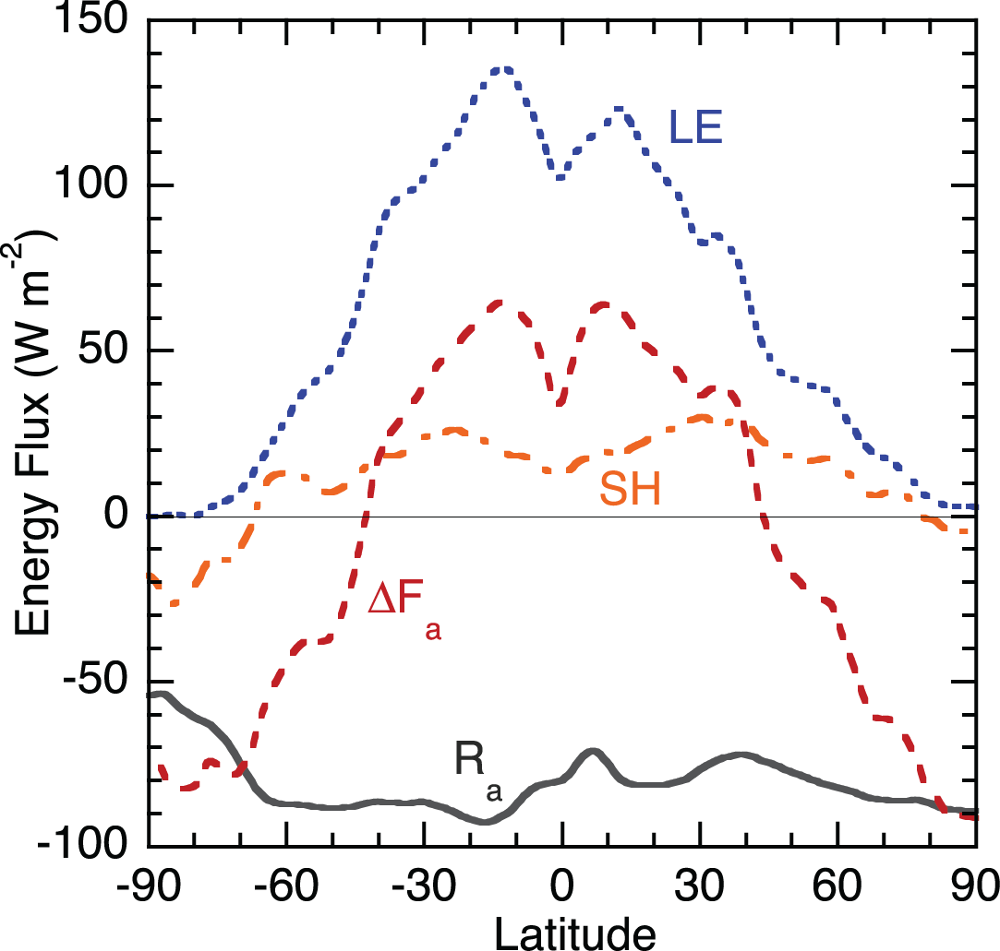
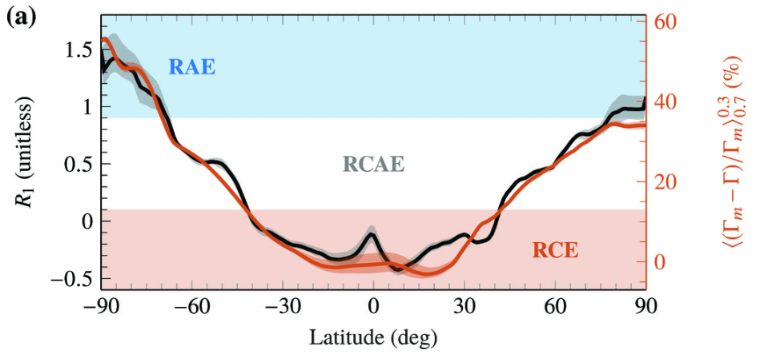
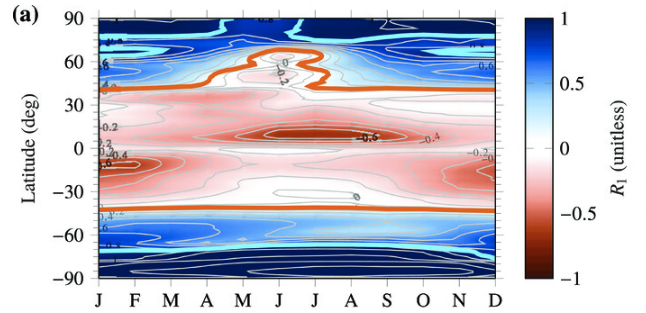
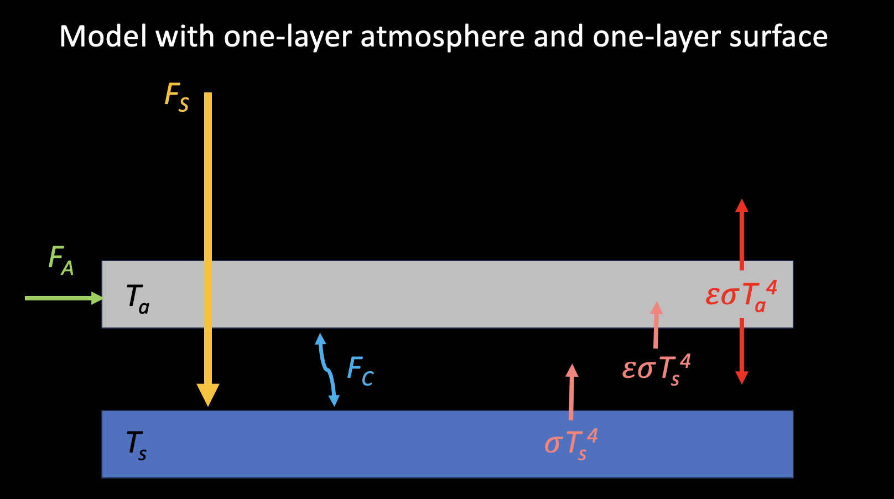

Climate regimes
RCE model is powerful to understand the most important feature of atmospheric vertical thermal profile. However, outside the tropical region, the the pathway of energy balance can be different from the RCE paradigm.
To maintain energy balance, three types of energy transfer can be considered:
advection
radiation
surfce turbulent fluxes
We can see below figure from Hartmann 2016 that characterizes the way to reach energy balance depends on latitudes.

in low latitudes, the radiative cooling is mostly balanced by surface turbulent fluxes (LE+SH). This corresponds to RCE (why?).
in high latitudes, the radiative cooling is balanced by advection from lower latitudes. This corresponds to RAE.
in midlatitudes, all three processes are important. We refer it to radiative convective advective equilibrium (RCAE).
So, the way how energy reaches balance is another representation of low, middle, and high latitude climates.
To quantify what we discuss above, we use the framework of vertically integrated, zonal-mean, annual-mean moist static energy (MSE) budget.
(89) \[<[\frac{\partial m}{\partial t}]> + <[\frac{\partial vm}{\partial y}]> = [R_{a}] + [LH] + [SH],\]
where m is the moist static energy (MSE), [\(\cdot\) ] is zonal mean, <\(\cdot\) > is vertical integration, \(R_a\) is the difference of TOA and surface radiative fluxes, \(LH\) and \(SH\) are latent and sensible heat fluxes respectively.
Note
Moist static energy (MSE) can be defined as:
(90) \[m = c_{p}T + gz + Lq\]
For simplicity, we drop notations [\(\cdot\) ] and <\(\cdot\) > and divide both side by the radiative fluxes to obtain a nondimensional equation, following Miyawaki et al. (2022) :
(91) \[\underbrace{\frac{\partial_{t}m+\partial_{y}(vm)}{R_{a}}}_{R_{1}} = 1 + \underbrace{\frac{LH+SH}{R_{a}}}_{R_2},\]
where \(R_1\) and \(R_2\) are two key nondimensional variables.
RCE regime: the \(R_a\) is mostly balanced by \(LE+SH\) \(\rightarrow R_{2} \approx -1\) \(\rightarrow R_1\) is small. (\(R_{1}<0.1\) )
RAE regime: the \(R_a\) is balanced by advection, so \(R_2\) is small or \(R_1\) is large . (\(R_{1}>0.9\) )
RCAE regime: \(R_1\) is moderate, but complicated!!! (\(0.1<R_{1}<0.9\) )
The figure from Miyawaki et al. (2022) below shows the \(R_1\) as a function of latitude with climate regime colored.

We also see strong seasonality of \(R_1\) :

Two-layer RAE model
Let us play around with a simpler model to emulate RAE. Payne et al. (2015) proposed a two-layer model to characterize RCE and RAE. I found this model very intersting and informative. The model looks like below:

The surface represents 1000 hPa and the atmosphere represents 500 hPa. \(F_{S}\) is the shorwave radiation absorbed by the surface, \(F_A{}\) is the sum of atmospheric heat rransport and shortwave radiation absorbed by the atmosphere, \(F_{C}\) is the convective heat transport.
Energy balance for
To trigger the convection, we assume that \(T_{s} - T_{a}\) have to exceed a critical lapse rate \(\Delta_{T}\) defined as:
(92) \[\Delta_{T} = T_{s} - T_{a}\]
(93) \[\frac{d\Delta_{T}}{dT_{s}} = -0.6 \mbox{ K/K}\]
So we can relate \(\Delta_T\) to \(T_s\) or derive \(\Delta_T\) as a function of \(T_s\) . Does this make sense? How does this relate to RCE?
In high-latitude, as discussed above, we assume convective heat transport is very weak, that is \(F_{C}=0\) . So the energy balance eqaution becomes:
(94) \[F_{S} + \epsilon \sigma T_{a}^{4} = \sigma T_{s}^{4}\]
(95) \[F_{A} + \epsilon \sigma T_{s}^{4} = 2\epsilon \sigma T_{a}^{4}\]
We can solve for \(T_s\) and \(T_a\) :
(96) \[\sigma T_{s}^{4} = \frac{2F_{S}+F_{A}}{(2-\epsilon)}\]
(97) \[\sigma T_{a}^{4} = \frac{\epsilon F_{S} + F_{A}}{\epsilon(2-\epsilon)}\]
Now we wouild like to test the sensitivity to emissivity. We take derivative with respect to \(\epsilon\) :
(98) \[\begin{split}\begin{eqnarray}
\frac{d\sigma T_{s}^{4}}{d\epsilon} &=& \frac{d\frac{2F_{S}+F_{A}}{(2-\epsilon)}}{d\epsilon} \\
\rightarrow 4\sigma T_{s}^{3} \frac{dT_{s}}{d\epsilon} &=& (2F_{S}+F_{A})(2-\epsilon)^{-2} \\
\rightarrow 4\sigma T_{s}^{4} \frac{dT_{s}}{d\epsilon} &=& (2F_{S}+F_{A})(2-\epsilon)^{-2}T_{s} \\
\rightarrow 4\frac{2F_{S}+F_{A}}{(2-\epsilon)}\frac{dT_{s}}{d\epsilon} &=& (2F_{S}+F_{A})(2-\epsilon)^{-2}T_{s} \\
\rightarrow \frac{dT_{s}}{d\epsilon} &=& \frac{T_{s}}{4(2-\epsilon)}
\end{eqnarray}\end{split}\]
So for small pertubed \(\delta T_{s}\) and \(\delta \epsilon\) , we can have:
(99) \[\delta T_{s} = \frac{T_{s}}{4(2-\epsilon)}\delta \epsilon\]
New we test the sensitivity to forcings, which are \(F_{A}, F_{S}\) and \(F_{R}\) , and feedbacks. We define \(F_{R}\) as the top-of-atmosphere radiative fluxes (forcing):
(100) \[F_{R} = -((1-\epsilon)\sigma T_{s}^{4}+\epsilon\sigma T_{a}^{4})\]
Note
The Plank feedback can be expressed as:
(101) \[\begin{split}\delta F_{R} = -4\sigma ((1-\epsilon)T_{s}^{3} + \epsilon T_{a}^{3}) \delta T_{uniform} \\
\rightarrow \frac{\delta F_{R}}{\delta T_{uniform}} = -4\sigma ((1-\epsilon)T_{s}^{3} + \epsilon T_{a}^{3}) = \lambda_{PL}\end{split}\]
For forcing \(F_R\) due to small change in atmospheric emissivity:
(102) \[\begin{split}\begin{eqnarray}
\frac{dF_{R}}{d\epsilon} &=& \sigma T_{s}^{4} - \sigma T_{a}^{4} \\
\rightarrow \delta F_{R} &=& (\sigma T_{s}^{4} - \sigma T_{a}^{4})\delta \epsilon \\
&=& (\frac{2F_{S}+F_{A}}{(2-\epsilon)} - \frac{\epsilon F_{S} + F_{A}}{\epsilon(2-\epsilon)})\delta \epsilon \\
&=& \frac{2\epsilon F_{S}+\epsilon F_{A}-\epsilon F_{S} - F_{A}}{\epsilon(2-\epsilon)} \delta \epsilon \\
&=& \frac{\epsilon F_{S}+(\epsilon-1)F_{A}}{\epsilon(2-\epsilon)} \delta \epsilon \\
&=& (\sigma T_{s}^{4} - \frac{1}{\epsilon (2-\epsilon)}(\frac{\epsilon(2-\epsilon)\sigma T_{s}^{4} - F_A{}}{2}+F_{A}))\delta \epsilon\\
&=& (\frac{\sigma T_{s}^{4}}{2}-\frac{F_{A}}{(2-\epsilon)}(\frac{1}{\epsilon}-\frac{1}{2}))\delta \epsilon
\end{eqnarray}\end{split}\]
(103) \[\begin{split}\begin{eqnarray}
\rightarrow \frac{\delta T_{s}}{\delta F_R{}} &=& \frac{1}{(\frac{\sigma T_{s}^{4}}{2}-\frac{F_{A}}{(2-\epsilon)}(\frac{1}{\epsilon}-\frac{1}{2}))\delta \epsilon} \times \frac{T_s}{4(2-\epsilon)}\delta \epsilon\\
&=& \frac{1}{4\sigma T_{s}^{3}(1-\frac{\epsilon}{2})-\frac{4F_A}{T_s}(\frac{1}{\epsilon}-\frac{1}{2})}
\end{eqnarray}\end{split}\]
For forcing \(F_{S}\) :
(104) \[\begin{eqnarray}
\frac{dF_{S}}{dT_{s}} &=& \frac{4(2-\epsilon)\sigma T_{s}^{3}}{2}
\end{eqnarray}\]
(105) \[\rightarrow \frac{\delta T_{s}}{\delta F_{S}} = \frac{1}{4\sigma T_{s}^{3}(1-\frac{\epsilon}{2})}\]
For forcing \(F_{A}\) :
(106) \[\begin{eqnarray}
\frac{dF_{A}}{dT_{s}} &=& \frac{4(2-\epsilon)\sigma T_{s}^{3}}{1}
\end{eqnarray}\]
(107) \[\rightarrow \frac{\delta T_{s}}{\delta F_{A}} = \frac{1}{8\sigma T_{s}^{3}(1-\frac{\epsilon}{2})}\]
Now consider feedback parameter \(\lambda = -\frac{\delta F}{\delta T_s}\) :
(108) \[\lambda(F_{S}) = -4\sigma T_{s}^{3}(1-\frac{\epsilon}{2}) \]
(109) \[\lambda(F_{A}) = -8\sigma T_{s}^{3}(1-\frac{\epsilon}{2})\]
(110) \[\lambda(F_{R}) = -(4\sigma T_{s}^{3}(1-\frac{\epsilon}{2})-\frac{4F_A}{T_s}(\frac{1}{\epsilon}-\frac{1}{2})))\]
Consider the lapse-rate feedback is the residual of total feedback minus Planck feedback:
(111) \[\lambda_{LR}(F_{S}) = -4\sigma T_{s}^{3}(1-\frac{\epsilon}{2}) + 4\sigma(1-\epsilon)T_{s}^{3} + 4\sigma\epsilon T_a{}^{3} = 4\sigma\epsilon (T_{a}^{3}-\frac{T_{s}^{3}}{2})\]
(112) \[\lambda_{LR}(F_{A}) = -8\sigma T_{s}^{3}(1-\frac{\epsilon}{2}) + 4\sigma(1-\epsilon)T_{s}^{3} + 4\sigma\epsilon T_a{}^{3} = 4\sigma (\epsilon T_{a}^{3}-T_{s}^{3})\]
(113) \[\begin{split}\begin{eqnarray}
\lambda_{LR}(F_{R}) &=& -(4\sigma T_{s}^{3}(1-\frac{\epsilon}{2})-\frac{4F_A}{T_s}(\frac{1}{\epsilon}-\frac{1}{2}))) + 4\sigma(1-\epsilon)T_{s}^{3} + 4\sigma\epsilon T_a{}^{3} \\
&=& 4\sigma\epsilon (T_{a}^{3}-\frac{T_{s}^{3}}{2}) + \frac{4F_{A}}{T_s}(\frac{1}{\epsilon}-\frac{1}{2})
\end{eqnarray}\end{split}\]
Are the lapse-rate feedbacks positive or negative? What determines their sign?
Two-layer RCE model
Similarly, we can construct a two-layer RCE model. Because convection (\(F_C\) ) is critical in lower latitudes, we need to activate the conective heat flux. The governing equation can be written as:
(114) \[F_{S} + F_{A} = (1-\epsilon)\sigma T_{s}^{4} + \epsilon \sigma (T_{s}-\Delta_T)^{4}\]
(115) \[T_{a} = T_{s} - \Delta_T, \mbox{ where } \frac{d\Delta_T}{dT_{s}}=\gamma = 0.6.\]
Take derivative w.r.t. \(T_s\) with \(F_S\) and \(F_A\) held constant:
(116) \[\begin{split}\begin{eqnarray}
&0& = 4(1-\epsilon)\sigma T_{s}^{3} - \sigma T_{s}^{4}\frac{d\epsilon}{dT_s} + 4\epsilon \sigma(T_{s}-\Delta_T)^{3}(1-\frac{d\Delta_T}{dT_s}) + \sigma (T_{s}-\Delta_T)^{4}\frac{d\epsilon}{dT_s}\\
&\rightarrow& \frac{d\epsilon}{dT_s}(\sigma T_{s}^{4}-\sigma(T_{s}-\Delta_T)^{4}) = 4(1-\epsilon)\sigma T_{s}^{3} + 4\epsilon\sigma (T_{s}-\Delta_T)^{3}\times (1-\gamma)\\
&\rightarrow& \frac{d\epsilon}{dT_s} = \frac{4(1-\epsilon)T_{s}^{3}+4\epsilon(1-\gamma)(T_{s}-\Delta_T)^{3}}{T_{s}^{4}-(T_{s}-\Delta_{T})^{4}}\\
&\rightarrow& \delta T_{s} = \frac{T_{s}^{4}-(T_{s}-\Delta_{T})^{4}}{4(1-\epsilon)T_{s}^{3}+4\epsilon(1-\gamma)(T_{s}-\Delta_T)^{3}}\delta \epsilon
\end{eqnarray}\end{split}\]
(117) \[\begin{split}\begin{eqnarray}
\frac{dF_S}{dT_s} = \frac{dF_A}{dT_s} = 4(1-\epsilon)\sigma T_{s}^{3} + 4\epsilon\sigma (1-\gamma)(T_{s}-\Delta_T)^{3}\\
\rightarrow \frac{\delta T_s}{\delta F_S} = \frac{\delta T_s}{\delta F_A} = \frac{1}{4(1-\epsilon)\sigma T_{s}^{3} + 4\epsilon\sigma (1-\gamma)(T_{s}-\Delta_T)^{3}}
\end{eqnarray}\end{split}\]
Actually, we can derive:
(118) \[\frac{\delta T_s}{\delta F_S} = \frac{\delta T_s}{\delta F_A} = \frac{\delta T_s}{\delta F_R}\]
For feedback parameter:
(119) \[\begin{split}\begin{eqnarray}
\lambda &=& -1 \times (4(1-\epsilon)\sigma T_{s}^{3} + 4\epsilon\sigma (1-\gamma)(T_{s}-\Delta_T)^{3}) \\
&=& \underbrace{-4\sigma((1-\epsilon)T_{s}^{3}+\epsilon(T_{s}-\Delta_T)^{3})}_{\lambda_{PL}} + \underbrace{4\sigma\epsilon\gamma(T_{s}-\Delta_T)^{3}}_{\lambda_{LR}}
\end{eqnarray}\end{split}\]

{kind=link}
{kind=link}
{kind=link}
{kind=link}